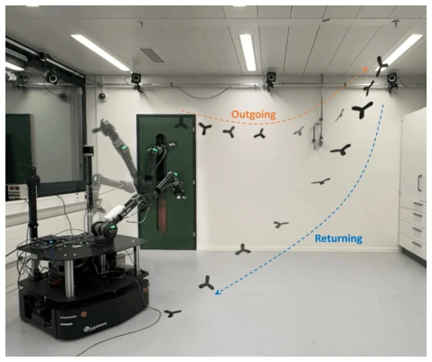
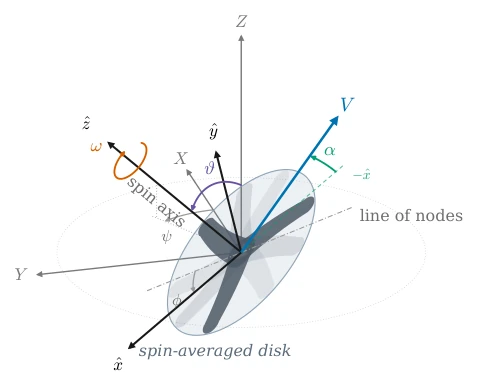
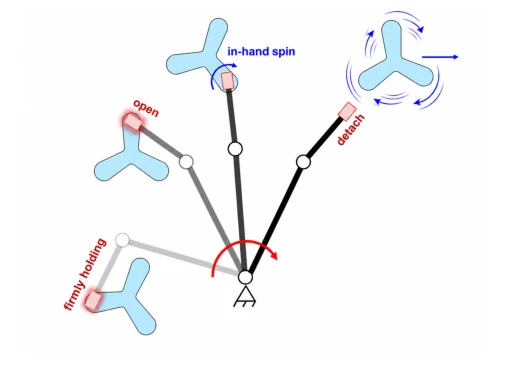
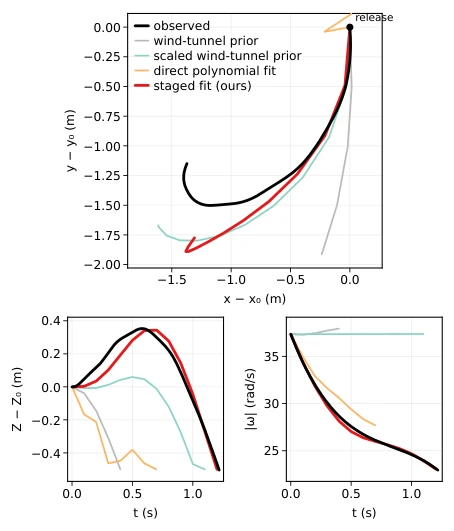
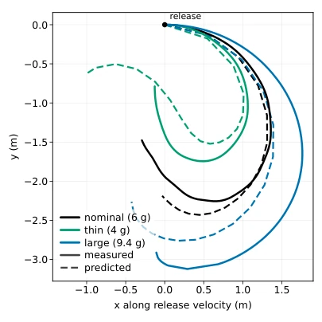
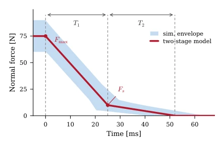
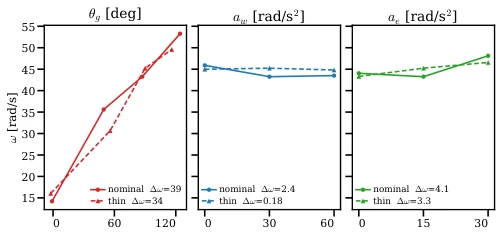
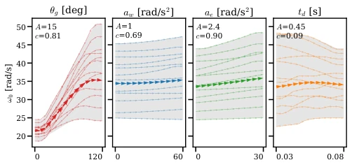
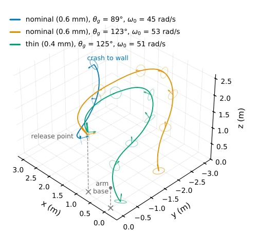

This paper finally enables robots to learn to "bring back" rather than "throw out", which can be considered "pet training" in the field of embodied intelligence. Although human throwing speeds are astonishing (joint angular velocity exceeding 70 rad/s [5]), robots are limited by actuators, and direct imitation will only lead to failure. The authors take a different approach, not learning human actions, but designing release states and objects tailored to robot capabilities. The highlight is the first realization of a robotic arm throwing a boomerang, breaking the "robots can only throw straight lines" curse. However, the drawbacks are also obvious: aerodynamic coefficients rely on flight data fitting rather than pure theoretical derivation, amounting to "cheating" calibration, and currently limited to indoor small scales. However, this "tailor-made" design philosophy is more pragmatic than blind imitation, proving that robots do not need to become human to complete complex tasks. This is not merely throwing, but also the ultimate utilization of dynamic modeling.
Objects that generate lift when thrown can break ballistic limits, but boomerangs are extremely sensitive to release velocity, attitude, and spin. Existing robot throwing research mostly focuses on ballistics or simple air resistance [7]-[14], lacking modeling of complex aerodynamic returns. Moreover, human throwing actions (as described in [5], [6]) require excessively high robot joint speeds, making direct reproduction infeasible. The core challenges lie in: 1. Contact dynamics at the moment of release (sliding/flip) are difficult to predict, leading to inconsistency between the release state and fingertip motion; 2. Robots cannot achieve the high spin of humans. It is necessary to establish a mapping between release state and flight trajectory, and adapt to robot capabilities. In addition, existing boomerang research mostly assumes launch conditions are known [1], [2], without considering robot execution limits. This leads to existing systems being unable to reproduce return flight on real robots.
The overall process revolves around the "release state". First, a spin-averaged model [1] is used to establish flight dynamics, adopting a "staged fitting" strategy: first using spin dynamics to independently fit axial torque coefficients (Eq 9), then combining aerodynamic priors to fit the remaining coefficients, totaling 16 parameters, which is more stable than direct polynomial fitting. Second, a sliding fulcrum model [4] is used to simulate the grasp-release transient, predicting the state at detachment. Next, "spin authority" and "consistency" metrics are defined to filter motion parameters (e.g., grasp angle). Finally, iterative design: first adjust motion parameters to increase spin; if it still cannot return, then modify object geometry based on flight model differential prediction (e.g., thinning blades). This method avoids direct optimization of high-dimensional parameters, instead decoupling motion and object design step by step.
The DynaArm robotic arm and three 3D-printed boomerangs were used. The flight model was calibrated using 9 hand-thrown data points, comparing wind tunnel priors, scaling priors, and direct fitting; the author's staged fitting was optimal in DTW and vertex height error (Table II). Motion parameter filtering verified in simulation that the grasp angle has the greatest impact on spin. In the final experiment, by adjusting the grasp angle to 125° and switching to a thin-blade boomerang, a release spin of 51 rad/s was achieved, flying 2.03 meters before returning to 0.31 meters. Repetition tests showed stable results. Compared to human throwing, the robot had a higher release speed but similar spin, indicating the utilization of release transient gain.
其他图片Other Figures

Fig. 1: Robot throws a boomerang with a returning flight.

Fig. 2: Boomerang frames and variable definitions.

Fig. 3: Transient release during an overhead throw. The boomerang is initially pinch-grasped. As the gripper opens and the normal force decreases, it pivots and slides in hand, gaining spin before detachment.

Fig. 5: Reconstruction of a representative nominal flight by model class: top view (top), height above release (bottom left), and spin rate (bottom right).

Fig. 6: Measured and predicted cross-design trajectories at closely matched release states in a release-aligned frame. Relative to the nominal design, the thin variant turns more tightly and the large variant more widely; the transferred staged fit predicts both changes without refitting.

Fig. 8: Two-stage normal-force profile used in the release simula- tion. The nominal profile is parameterized by the peak force Fmax, switching force Fs, and phase durations T1, T2; the shaded region shows the range sampled during screening.

Fig. 10: Measured release-spin response on the robot for the three motion parameters retained after simulation screening. Each curve corresponds to one boomerang variant while one motion parameter is varied and the remaining parameters are held at the operating point.

Fig. 9: Simulated release-spin response for the four candidate motion parameters. Each curve shows ω0 as one parameter is swept under a fixed operating condition; the bold curve is the ensemble mean and the shaded band shows the range. The overall change of the mean reflects spin authority A, while consistent local slopes across parameter levels and operating conditions correspond to high consistency c. Twelve conditions are shown for legibility.

Fig. 11: Measured robot flights illustrating the design procedure. Increasing the grasp angle raises the nominal variant’s release spin and produces a clear turn, but the boomerang does not return. The thin variant returns at a similar release spin. For each throw, the release configuration is chosen so that the end-effector velocity is approximately horizontal.